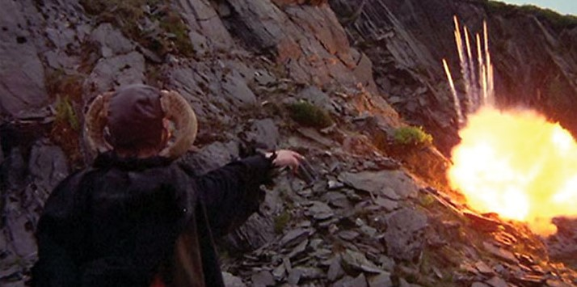
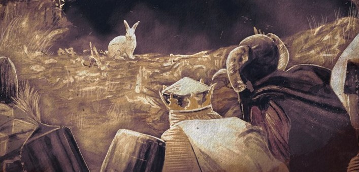

King Arthur and his Knights of the Round Table (the most valiant warriors in all of Great Britain) struggled to slay the beast.
Even though they were on a holy quest from God and equiped for combat, they still lost many a good man to this horrid beast.
Eventually they only triumphed with the use of Holy High Explosives... (statistically you don't have a class 3 explosives license so good luck ;)!)
In all its holyness, the Holy Hand Grenade of Antioch smited their foes
The mighty and powerful sorcerer Tim the Enchanter advises against it.
He is smarter than even Arthur, King of the Britains.
He can literally shoot fire at will and still won't fight the Killer Rabbit!
His brain is so large, his skull grew horns to give it more room (no, I promise it's not a hat)
Told you he can shoot fire!
If you weren't listening when Tim told you, I'll reitterate.
It has big nasty teeth! (Razor sharp)
It has a mean streak a mile wide! (~1.6km)
Its has already killed hundreds of men! (You would be one of them)
The Beast dispatches Arthur's knights at a speed beyond comprehension.
Historical rendition or the most powerful combatants in the land cowering before the Killer Rabbit of Caerbannor.